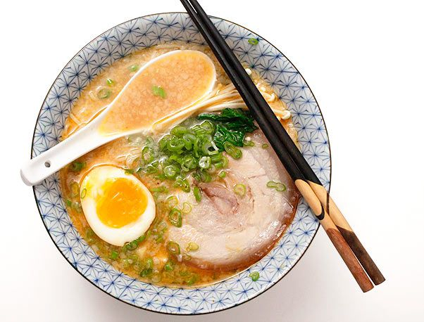

Tonkotsu Ramen

Description
Tonkotsu ramen (豚骨ラーメン) is a ramen dish that originated in the Fukuoka Prefecture on the Kyushu island of Japan, and it is a speciality dish in both Fukuoka and Kyushu. The soup broth is based on pork bones and other ingredients, which are typically boiled for several hours, and the dish is traditionally topped with sliced pork belly and served with ramen noodles that are hard in the center. In Fukuoka, Japan, tonkotsu ramen is referred to as Hakata ramen.
Ingredients
- 8 cups tonkotsu pork broth
- 12 oz good quality dried ramen noodles
- 4 large or extra large eggs
- 2-3 oz enoki or other mushrooms
- thinly sliced green onions
- Boil the ramen noodles in plenty of water as directed by the packaging. If there’s no translation on the packaging usually its 4 minutes. You don’t need to salt the water.
- Cook the mushrooms along side the noodles – you just want them softened.
- Place 1/4 of whichever tare you are using in the bottom of four bowls.
- Ladle in about 1/2 cup of the tonkotsu broth into each of the bowls and stir to mix.
- Add the noodles. Pour in another 1 1/2 cups of the tonkotsu broth per bowl.
- Top with the egg, mushrooms, pork and green onions.